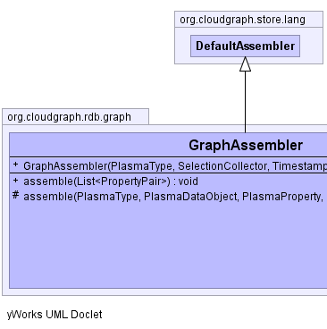
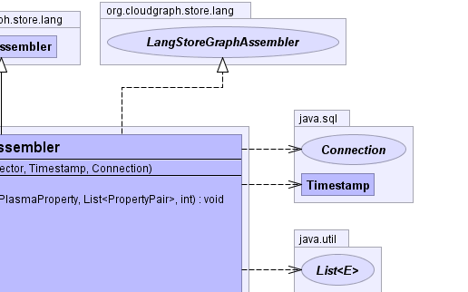
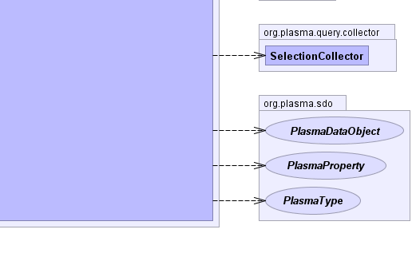

- java.lang.Object
-
- org.cloudgraph.store.lang.AssemblerSupport
-
- org.cloudgraph.store.lang.DefaultAssembler
-
- org.cloudgraph.rdb.graph.GraphAssembler
-
- All Implemented Interfaces:
- LangStoreGraphAssembler, org.plasma.sdo.access.DataGraphAssembler
public class GraphAssembler extends DefaultAssembler implements LangStoreGraphAssembler
Constructs a data graph starting with a given root SDO type based on a "selection graph" of selected SDO properties, where properties are mapped by selected types required in the result graph.The assembly is triggered by calling the
GraphAssembler#assemble(Listmethod which initializes the graph root and begins a breadth first traversal of the selection graph as represented in the underlying data store.results) Various metrics for the assembly are collected using
GraphMetricVisitorand are available as SDO instance properties.- Since:
- 0.6.2
- Author:
- Scott Cinnamond
- See Also:
GraphMetricVisitor-
  

-
-
Field Summary
-
Fields inherited from class org.cloudgraph.store.lang.DefaultAssembler
dataObjectMap, EMPTY_DATA_OBJECT_LIST, EMPTY_PROPERTY_SET, nameComparator, root, rootType, snapshotDate
-
Fields inherited from class org.cloudgraph.store.lang.AssemblerSupport
collector, statementExecutor, statementFactory
-
-
Constructor Summary
Constructors Constructor and Description GraphAssembler(org.plasma.sdo.PlasmaType rootType, org.plasma.query.collector.SelectionCollector collector, java.sql.Timestamp snapshotDate, java.sql.Connection con)
-
Method Summary
Methods Modifier and Type Method and Description voidassemble(java.util.List<org.plasma.sdo.access.provider.common.PropertyPair> results)Initiates the assembly of a data graph based on the given results list.protected voidassemble(org.plasma.sdo.PlasmaType targetType, org.plasma.sdo.PlasmaDataObject source, org.plasma.sdo.PlasmaProperty sourceProperty, java.util.List<org.plasma.sdo.access.provider.common.PropertyPair> childKeyPairs, int level)Assembles a data object of the given target type by first forming a query using the given key/property pairs.-
Methods inherited from class org.cloudgraph.store.lang.DefaultAssembler
clear, collectResults, createDataObject, createHashKey, findDataObject, getDataGraph, initRoot, link
-
Methods inherited from class org.cloudgraph.store.lang.AssemblerSupport
findNextKeyValue, getChildKeyPairs, getChildKeyPairs, getChildKeyProps, getNextKeyPairs, getPredicateResult, getStatementExecutor, getStatementFactory, throwPriKeyError
-
-
-
-
Constructor Detail
-
GraphAssembler
public GraphAssembler(org.plasma.sdo.PlasmaType rootType, org.plasma.query.collector.SelectionCollector collector, java.sql.Timestamp snapshotDate, java.sql.Connection con)
-
-
Method Detail
-
assemble
public void assemble(java.util.List<org.plasma.sdo.access.provider.common.PropertyPair> results)
Initiates the assembly of a data graph based on the given results list.- Specified by:
assemblein interfaceLangStoreGraphAssembler- Specified by:
assemblein classDefaultAssembler- Parameters:
results- the results list- See Also:
DataGraphAssembler.getDataGraph()
-
assemble
protected void assemble(org.plasma.sdo.PlasmaType targetType, org.plasma.sdo.PlasmaDataObject source, org.plasma.sdo.PlasmaProperty sourceProperty, java.util.List<org.plasma.sdo.access.provider.common.PropertyPair> childKeyPairs, int level)Assembles a data object of the given target type by first forming a query using the given key/property pairs. If an existing data object is mapped for the given key pairs, the existing data object is linked.- Specified by:
assemblein classDefaultAssembler- Parameters:
targetType- the type for the data object to be assembledsource- the source data objectsourceProperty- the source propertychildKeyPairs- the key pairs for the data object to be assembled
-
-